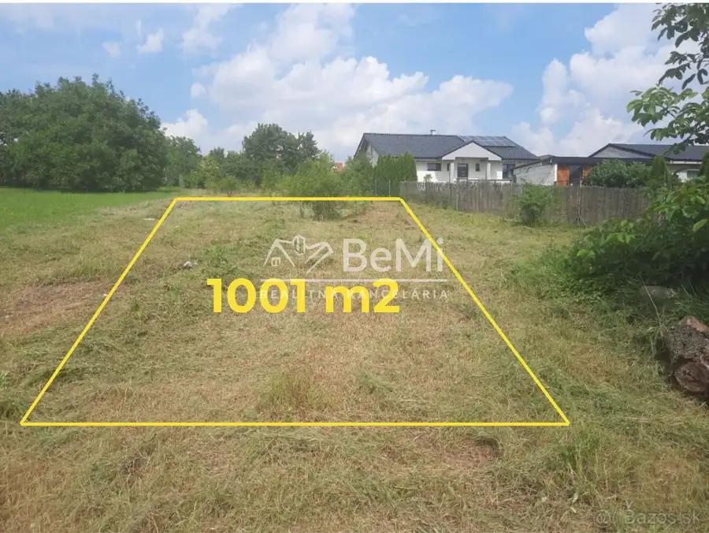
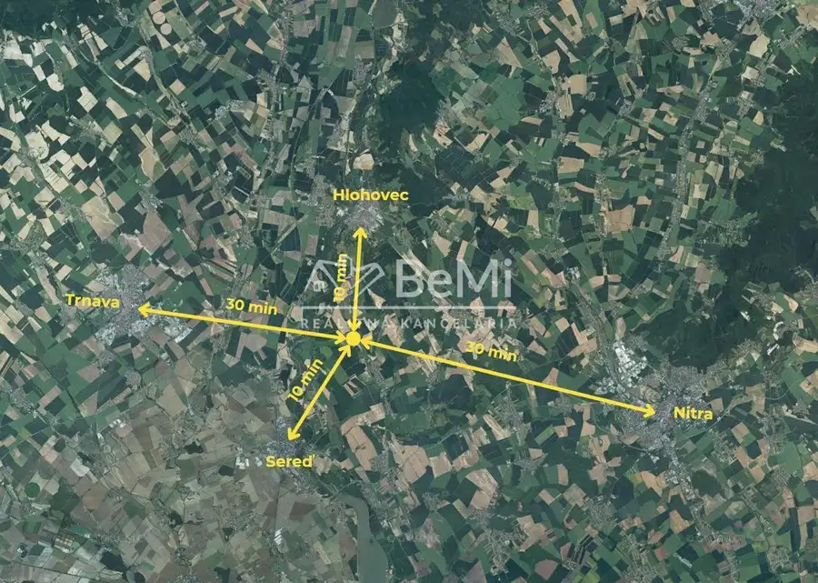
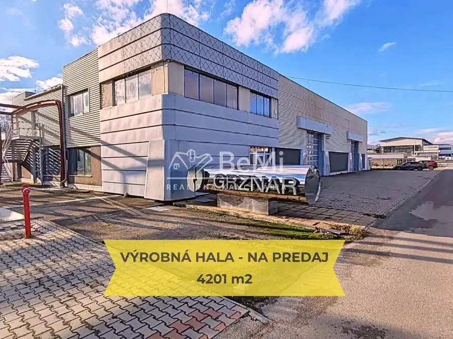
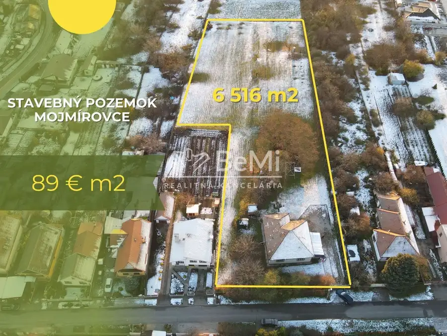

Predaj - stavebný pozemok 1001 m2 Dvorníky id 024-14-fija
Dvorníky


- Plocha1001 m²
- VlastníctvoOsobné
O nehnuteľnosti
Hľadáte únik z ruchu veľkomiest a túžite po návrate k prírode?Práve ste našli ideálne miesto na oddych a relax v obci – Dvorníky.Ponúkam vám na predaj stavebný pozemok s výmerou 1001 m², na ktorom môže vyrásť váš vysnívaný dom.Pozemok má pravidelný a mierne svahovitý tvar. IS sa nachádzajú v tesnej blízkosti a vedie k nemu spevnená cesta – výstavbu vám v tom prípade nebude nič komplikovať.Vďaka polohe pozemku budete mať vždy dosť svetla a relax na záhrade vám zas spríjemní veľký priestor a kľudná časť obce.LokalitaObec Dvorníky, okres Hlohovec, kraj TrnavskýVýmera nehnuteľnostiPozemok má veľkosť 1001 m².Vlastnosti pozemkuVšetky IS sú v dosahu. Tvar pozemku je pravidelný s mierne svahovitým terénom.K pozemku vedie spevnená cesta.Investičný potenciál pozemkuPozemok je možné využiť aj ako malý developerský projekt. Veľkosť a dispozícia umožňuje rozdelenie pozemku na dva stavebné pozemky.Krásna lokalita uprostred obceTáto kľudná časť obce leží len 10 minút cesty autom od mesta Sereď a tak isto 10 minút od okresného mesta Hlohovec. Napojenie na rýchlostnú komunikáciu R1 vám zaberie 13 minút.Dvorníky je obec s vynikajúcou dostupnosťou do 4 veľkých miest – Sereď, Hlohovec, Trnava, Nitra.Obec Dvorníky disponuje kompletnou občianskou vybavenosťou.Pozemok vám ponúka vysnívané hniezdočko a útočisko pred nástrahami modernej doby.Poloha pozemku je ako stvorená pre pokojný rodinný život.NAŠE CENY SÚ VRÁTANE PROVÍZIE ZA KOMPLETNÝ SERVIS A SÚ SCHVÁLENÉ MAJITEĽOM. Filip Jančo 0944 194 286 janco@realitybemi.sk
Parametre
- Druh
- Pozemok pre rodinné domy
- Dátum zverejnenia
- 03. 09. 2025
- Odpadové vody
- Na pozemku - Kanalizácia
- Plocha pozemku
- 1001 m²
- Typ
- Predaj
- Vlastníctvo
- Osobné
- Voda
- Na pozemku - Diaľkový vodovod, Pri pozemku - Verejný vodovod
Kde to je


Mohlo by Vás zaujímať

Komerčné priestoryNové 1 330 000 €Predaj -výrobná hala so skladovými priestormi id 030-18-FIJAa Topoľčany 2293 m² Komerčné priestoryNové 1 330 000 €Predaj -výrobná hala so skladovými priestormi id 029-18-FIJAa Tovarníky 2293 m²
PozemokNové Cena na vyžádáníPredaj - stavebný pozemok - Mojmírovce id 025-14-fija Mojmírovce 6516 m²